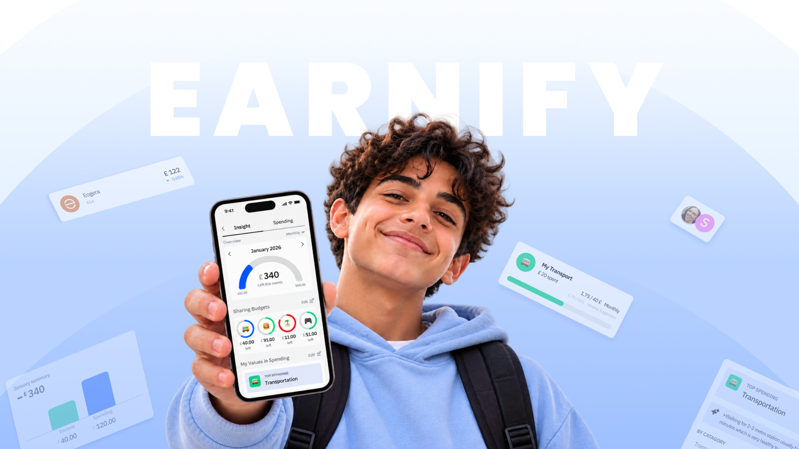
Earnify App
In the UK, many young adults have low savings buffers, making small unexpected bills a serious problem. A Building Societies Association (BSA) report found that 36% of under-24s could not cover an unexpected £300 expense, and that 27% of UK adults have less than £1,000 in savings. UK media also reports that over 11 million Britons hold under £1,000 saved. These figures suggest that financial resilience depends not only on knowledge, but on habits—saving regularly, budgeting, and reflecting on spending—built early and reinforced over time.
Source: Building Societies Association (BSA)
- Less than £1,00027%
- £1,000 or more73%
Source: Building Societies Association (BSA)
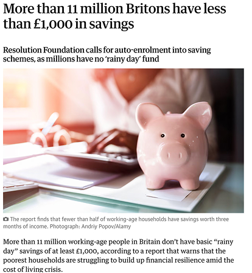
UK media coverage of a Resolution Foundation report
Having too little money left after essentials is the main barrier to saving, so habits alone cannot explain low savings. However, low savings can also be a visible sign of a broader gap in the regular saving habits and guidance young people build while growing up. In the UK, only 47% of 7–17-year-olds have received a meaningful financial education, and just 10% have received it at both home and school. For some young people, peer pressure and social media make saving harder still. These early differences can last: British panel data shows that children who saved at 11–15 were more likely to save as adults. An app cannot solve low income, but it may help teens practise the money habits within their control.
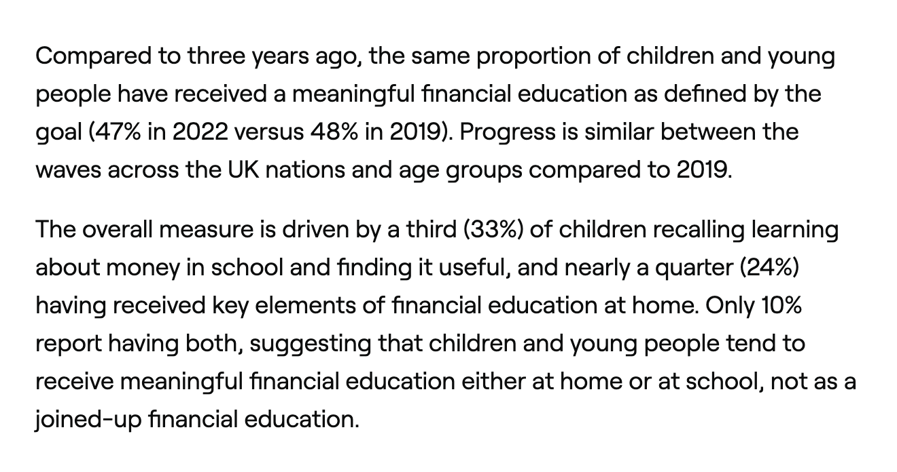
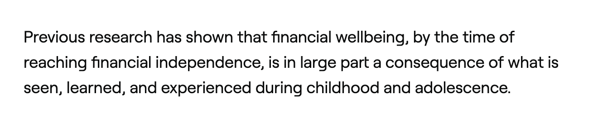
Financial habits begin developing before adulthood and continue to evolve throughout adolescence. This creates an opportunity to help teens practise saving, budgeting, and making everyday spending decisions before taking on greater financial responsibilities. This project explores how an app could support that practice and help teens build consistent money habits over time.
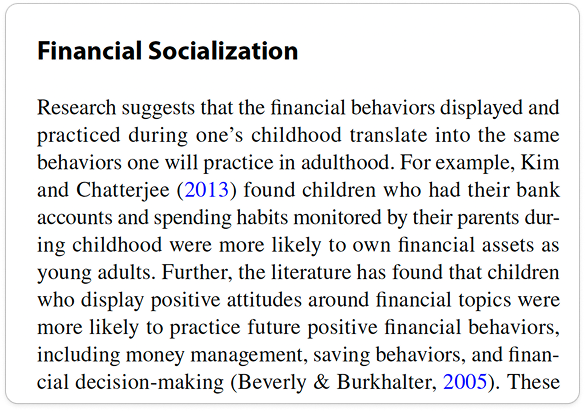
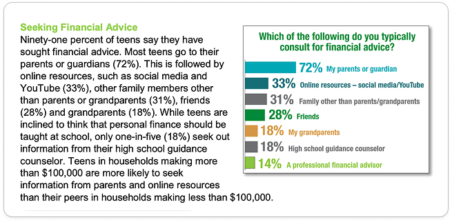
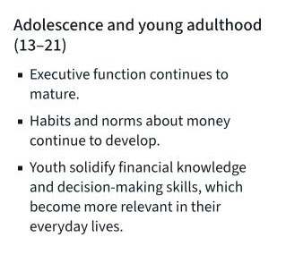
| App | Contents in the main dashboard / home | Finance education functions | |||||||
|---|---|---|---|---|---|---|---|---|---|
| Balance | Budget categories | Chore completion | Pension analysis | Credit analysis | Mortgage tracking | Lessons | Badge on learning | Finance readings | |
| Gohenry | |||||||||
| Emma | |||||||||
| Wallet | |||||||||
| Good Budget | |||||||||
Note: Because I’m not a teenager, I wasn’t able to download teen apps offered by other banks, so they aren’t included in this comparison.
The market is polarized:
kid-focused ‘allowance + chores’ apps
vs.
adult-grade finance tools
Teens fall in the gap
Seven of the nine teens surveyed were aged 14–16, giving us more insight into this group than other ages. Within this group, all had saving or investing goals, but only three always set money aside for them. Five also received parental money guidance at least weekly. Combined with desk research on developing financial independence during adolescence, these findings informed our choice of ages 14–16 as the initial design focus.
- Ages 14–167
- Ages 11 and 132
Source: Teen survey (Google Forms, 9 teens)
-
Had saving or investing goals7 of 7
-
Always set money aside for specific goals3 of 7
-
Received parental money guidance at least weekly5 of 7
Source: Teen survey (Google Forms, 9 teens)
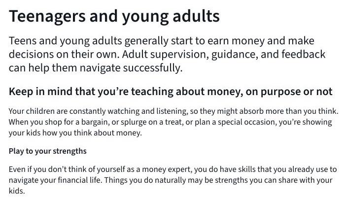
Source: Consumer Financial Protection Bureau (CFPB), Money as You Grow
- Had saving or investing goals (8)
- No such goals reported (1)
- Always set money aside (3)
- Sometimes or rarely set money aside (6)
- Lack of money management knowledge (17)
- Other potential causes (9)
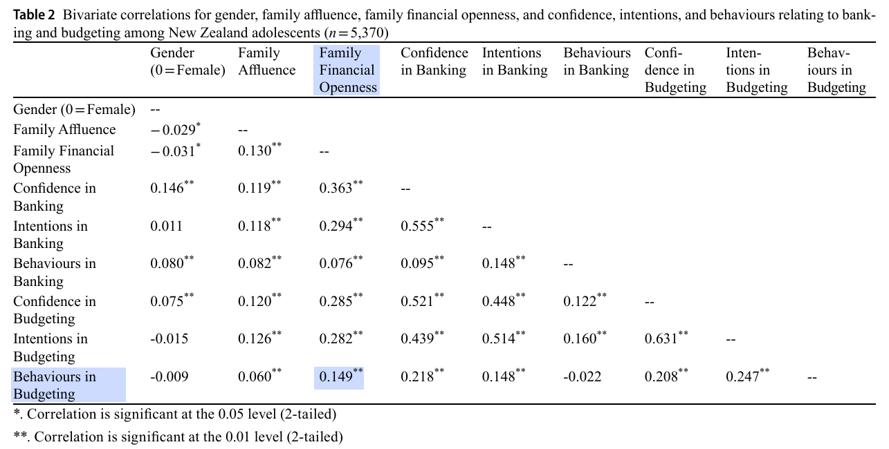
Agnew, S., & Sotardi, V. A. (2025). Family financial socialisation and its impact on financial confidence, intentions, and behaviours among New Zealand adolescents. Journal of Family and Economic Issues, 46(1), 246–258. https://doi.org/10.1007/s10834-024-09990-8
Licensed under CC BY 4.0. Highlighting added.
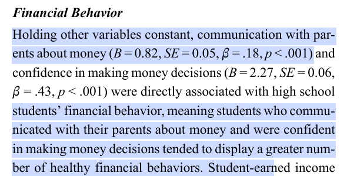
Deenanath, V., Danes, S. M., & Jang, J. (2019). Purposive and unintentional family financial socialization, subjective financial knowledge, and financial behavior of high school students. Journal of Financial Counseling and Planning, 30(1), 83–96. https://doi.org/10.1891/1052-3073.30.1.83
Full text on ERIC. Highlighting added.
| Criterion | Participant A(M, 16) | Participant B(M, 16) | Participant C(M, 15) | Participant D(M, 16) | Participant E(M, 15) | Participant F(M, 15) |
|---|---|---|---|---|---|---|
| 1. Budget proactively | 0.5 – Writes yearly budget, checks monthly balance, but not deeply | 0 – No written budget, general 'spend wisely' advice | 1 – Writes budget on paper monthly, uses 50/30/20 rule | 0 – No budget, tracks mentally | 1 – Writes budget on excel | 0 – No budget, tracks mentally |
| 2. Adapt to irregular income | 1 – Saves from irregular allowances, manages fragmental income | 1 – Adjusts spending/saving with irregular cash from dad | 0 – Regular allowance, N/A | 0 – Regular allowance, N/A | 1 – Saves from irregular allowances, manages fragmental income | 0 – Regular allowance, N/A |
| 3. Willing to discuss saving with parents | 1 – Talks to mom, close relationship, investment plans shared | 0 – The conversation with dad is shallow | 1 – Talks to mom about budgeting advice | 0.5 – Mother talks about spending priorities, but not deep savings | 1 – Likes to brag how much he saved, talks with dad how he will use his money later | 0 – The conversation with mom is shallow (asking money for getting games) |
| 4. Know bank account type | 0.5 – Has joint account with mom, some awareness | 0 – Aware of joint family account setup, but gets cash from dad mostly | 1 – Knows debit card setup with dad monitoring | 0.5 – Has teen debit card, unsure difference from normal | 1 – Knows debit card setup, separate the saving pots into 3 sectors to track incomes | 1 – Aware of student account |
| 5a. Saving habit | 2 – Saves monthly £100 into investment fund | 1 – Saves sometimes into investment, inconsistent habit | 2 – Saves monthly for 5 months consistently | 0 – No regular saving habit | 2 – Saves 20-30 percent whenever there is income | 0 – No regular saving habit |
| 5b. Saving rate | 2 – ≥20% of irregular income saved | 1 – 5–19% of irregular income saved | 2 – 20% of allowance saved | 0 – No consistent saving, 0% rate | 2 – ≥20% of irregular income saved | 0 – No regular saving habit |
| 5c. Flexible cash | 0 – All money locked in investment, no flexible | 0 – All savings in investment, no flexible cash | 2 – Cash savings accessible | 0 – No cash saved | 2 – Cash savings accessible | 0 – 1500 pounds for 2 year is not much |
| 5d. Goal–vehicle match | 1 – Investment matches long-term study abroad goal | 0.5 – Investment fund but vague plan for future company | 0.5 – Cash savings appropriate for short term but no long-term plan | 0 – No saving system at all | 1 – Saving tracking by separating different spaces based on source | 0 – No saving system at all |
| 6. Effective spending | 1 – Buys within budget, invests instead of splurging | 1 – Chooses cheaper but equal-spec electronics, avoids brand premium | 1 – Prioritises needs, avoids unnecessary purchases | 0.5 – Some price-conscious choices, avoids premium but no consistent system | 1 – Buys within budget, buy something that is worth to use for long term | 0.5 – Buys within budget |
| 7. Made short goal | 1 – Bought second-hand iPhone 13 within budget | 1 – Saved for iPad, resold computers for profit | 1 – Saved for second-hand laptop | 0 – No specific short goal achieved | 0 – No specific long-term goal | 0 – No specific long-term goal |
| 8. Have long goal | 1 – Saving from puppy business for master's in USA/Canada (specific long-term plan) | 0 – Wants to start own company but no specific plan, unrealistic | 0 – No long-term goal mentioned | 0 – No specific long-term goal | 0 – No specific long-term goal | 0 – No specific long-term goal |
| 9. Saving ratio | 600 (for investment) / irregular income | 300 (for investment) / irregular income | 1500 / 500 per month (3–4 month duration) | 0 | more than 2000 / irregular income | more than 1200 / regular income of 700 per month for 2 years |
| Total | 11 | 5.5 | 11.5 | 1.5 | 12 | 1.5 |
- Name
- Ethan
- Age
- 15 years old
- Gender
- Male
- Location
- Living with his parents in Chiswick, London
- Education
- Year 11 student at a local secondary school, preparing for his GCSEs
“I know saving and budgeting are important, but they’re hard to put into practice.”
- Wants to save money, but his irregular allowance makes it harder to save.
- Eager to make money.
- Has a decent relationship with his parents, but not close enough for long conversations about money.
- Has no long-term goal for his savings.
- Previously saved around £500 to buy his laptop, but has struggled to save since.
- Does not write his own budget.
- Name
- Tracey
- Age
- In her 50s
- Gender
- Female
- Family
- Mother of two boys, including Ethan
- Occupation
- Working
“I don’t want to nag my kids about money, but I know financial education is important.”
- Did not receive proper financial education from her own parents when she was young.
- Tries her best to model healthy money habits for Ethan, comparing prices while grocery shopping and asking how much he has saved so far.
- Does not use a budgeting app or write her own budget, as she believes she knows her money flow without one.
- Pays Ethan’s monthly rent with her husband’s money.
"14–16 UK teenagers lack a proactive system to manage irregular income and build financial habits, while parents struggle to provide practical financial advice, resulting in a cycle of financial anxiety and 'shallow' education."
"How might we design a proactive financial system for 14–16 UK teens that transforms 'shallow' education into 'confident' habits by balancing teen autonomy with frictionless parental guidance?"
Translated 40+ user stories into four core functional pillars — a system that manages irregular income and facilitates safe, AI-supported exploration.
Each group is labelled with the pillar it became. Pillar 01 · Proactive Budgeting brings together two groups: budget habit, and spending tracking with real tips.
- As a teen,I want to choose whether to connect a parent/carer now or later so that I can start privately and add support.
- As a teen,I want a system that is easier than excel to do the budgeting, so that I can start budgeting without feeling overwhelmed.
- As a teen,I want a finance system that is relatable so that I don’t stop using the system in the middle.
- As a teen,I want a finance system that is relatable so that I don’t stop using the system in the middle.
- As a teen,I want short practical tips based on my spending patterns so that I learn by doing instead of hard vocabulary definitions.
- As a teen,I want to separate “flexible cash” from “locked savings for goals” so that I don’t feel stuck with no usable money.
- As a guardian,I want to show my teens how to really compare prices in daily life so that I am not repeating nagging.
- As a teen,I want to use money in the most effective way so that later I will have enough saving for other goals.
- As a guardian,I want some finance experts for my teens so that my teens to save money wisely.
- As a guardian,I want some finance experts for my teens so that I do not have to nag them to save.
- As a guardian,I want my teen to apply a template like “50/30/20” so that teens can follow clear structure and guidance that I may be hard to always ask them to do so.
- As a guardian,I want teen’s “saving plan” for a big purchase (e.g., laptop) so that I can save consistently and not struggle after buying it.
- As a guardian,I want to see whether my teen has a long-term goal set so that I can help them plan beyond immediate spending.
- As a teen,I want to categorize spending as “need / want / goal” so that I can reflect on saving habits.
- As a guardian,I want to view teens spending summaries and leave positive feedback so that I can know if the teen is using money wisely.
- As a guardian,I want a situation that is not awkward to ask how much saving has been done so that I can guide them even if I’m not confident in finance.
- As a guardian,I want to see teen’s saving without asking them directly so that I do not pressure the teens but care their finance situation.
- As a teen,I want to explore investing with simple explanations so that I know the direction to start invest.
- As a teen,I want to explore investing with simple explanations and risk reminders so that I can learn safely without overconfidence.
- As a teen,I want to know many other investment options so that I can a starting points to study investment.
- As a guardian,I want a finance system that is relatable for teens to learn and save, so that I don’t need financial knowledge to begin.
Used the UK Financial Foundations survey’s picture of a meaningful financial education as the benchmark: children who receive one feel more confident, save more regularly and talk about money. Feature ideas were then scored out of 100 on habits, confidence, goal motivation, dialogue, autonomy and safety, and ease of delivery, and the top-ranked ideas shaped the four MVPs.
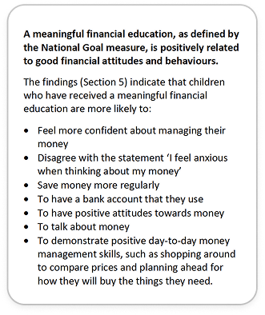
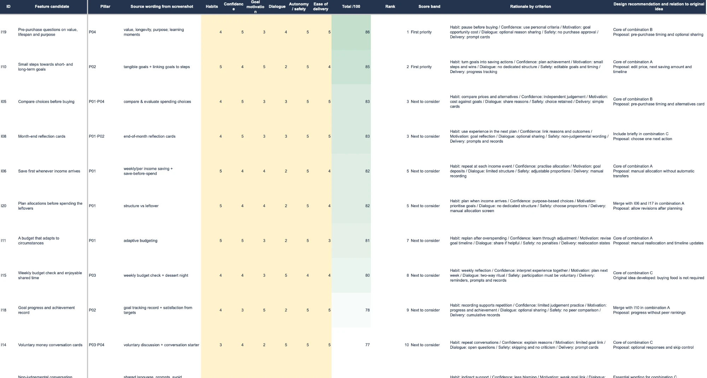
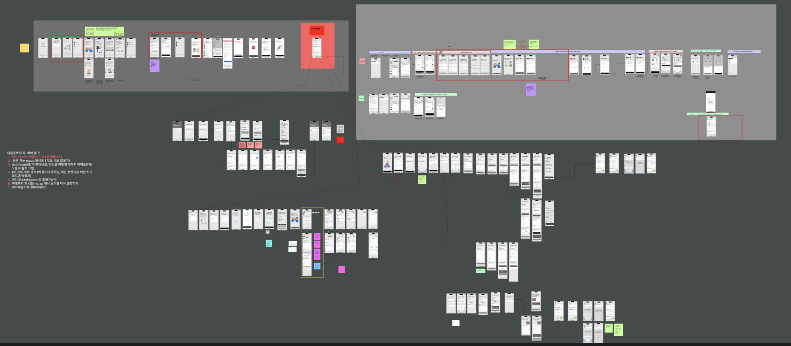
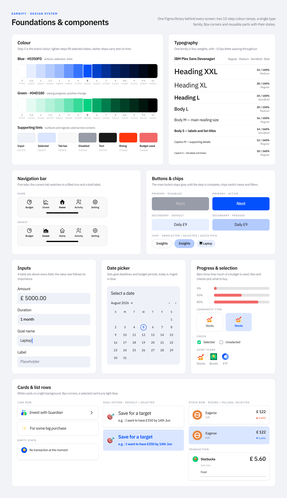

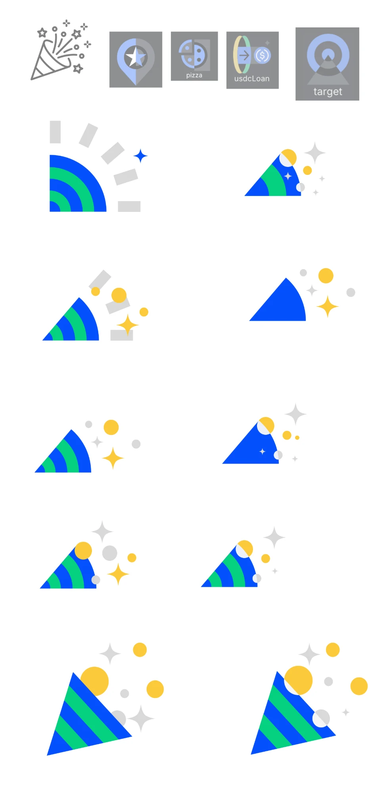
Early tasks needed to feel more relevant for teens
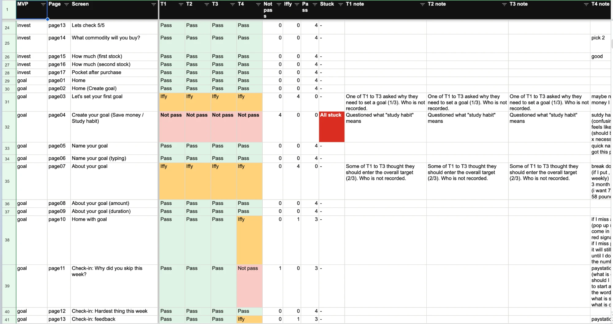

The investment flow did not make its learning-first intention clear before action
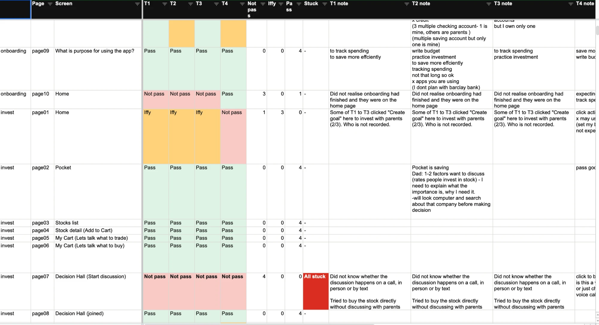
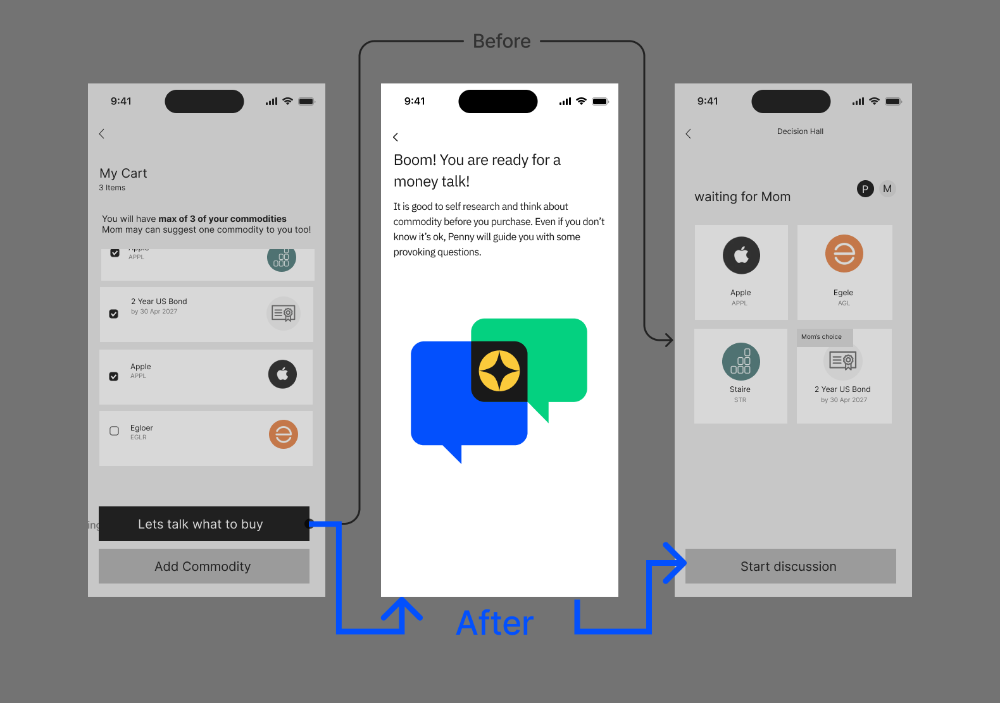
Parents may not be ready for having instructional responsibility in investment-related moments.

Parents felt that direct spending comparison was not a meaningful way to support teens
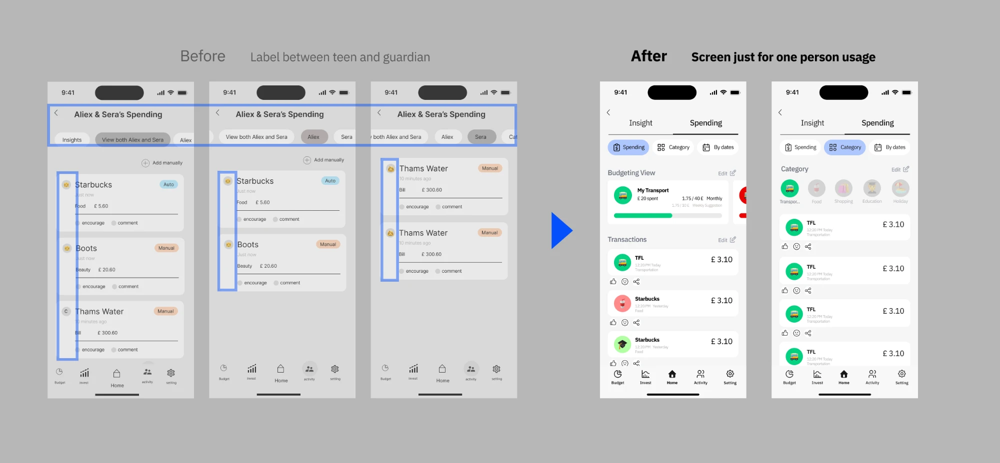
Click through it as you would on a phone. On desktop, the panel beside the phone jumps between Onboarding, Goal setting, Budgeting, Invest after conversation and Spending with guardian.
Earnify's AI is designed to keep teens safe. It follows clear rules, and if it notices signs that someone may be at risk, it shows a helpline and alerts the Designated Safeguarding Lead (DSL) — the trained person responsible for child safety.
- End the conversation suddenly
- Lecture or ask clinical questions
- Generate its own crisis response
- Assume the home is safe
- Stay warm and present
- Show one fixed helpline number
- Alert the DSL immediately
- DSL decides on parent contact
Going forward, I would want to test the product not only with teens and parents, but also with stakeholders responsible for child safety, safeguarding, and legal compliance, to ensure the experience supports healthy habits while meeting the UK's expectations for age-appropriate design.